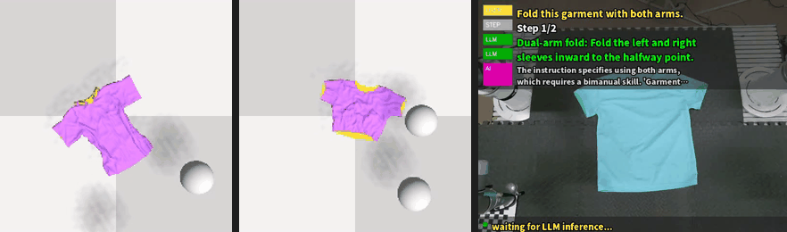

MSU-Fold: Unified Multi-Scale Heatmap Decoding and Language-Grounded
Skill Decomposition for Multi-Step Robotic Cloth Folding
One natural-language instruction in, a folded garment out. A single shared
pick/place heatmap head serves both one-arm and two-arm steps, a multi-scale
adapter fuses hidden states of a frozen ViT, and a skill library decomposes the
instruction into executable folding steps that run closed-loop in simulation and
on a real dual-arm robot.
Teaser

Simulation rollouts (unimanual)
unimanual-tshirt-fold · 4 steps
unimanual-trousers-fold · 3 steps
unimanual-corner-fold · 4 steps
unimanual-triangle-fold · 2 steps
unimanual-straight-fold · 3 steps
Simulation rollouts (bimanual)
bimanual-tshirt-fold · 2 steps
bimanual-trousers-fold · 2 steps
bimanual-corner-fold · 2 steps
bimanual-half-fold · 2 steps
Real robot